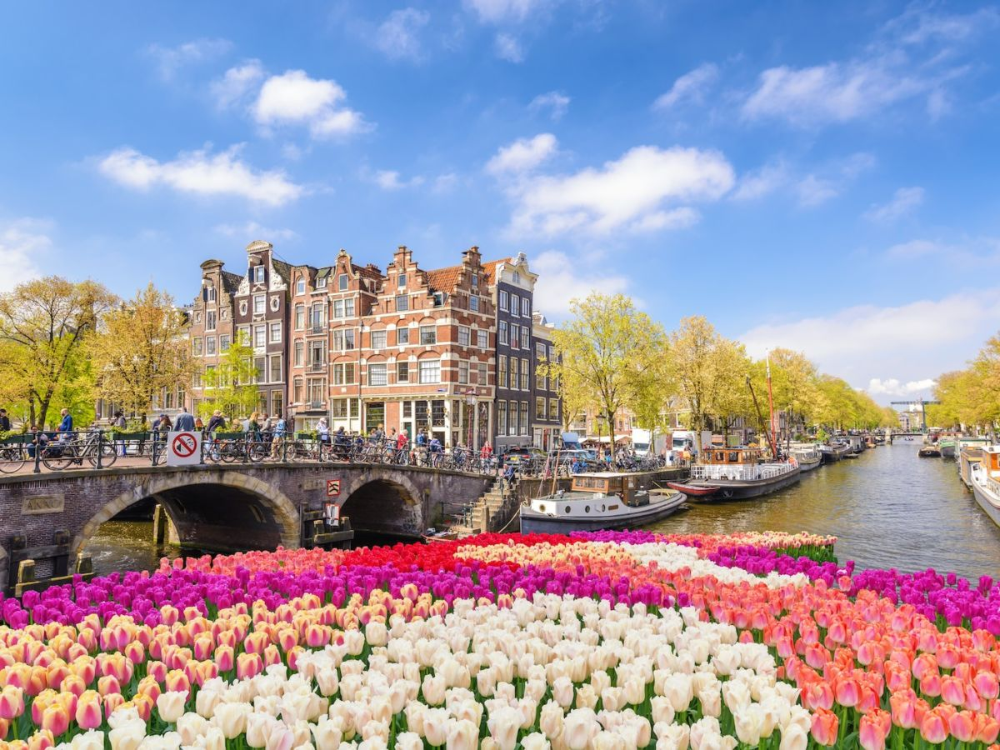
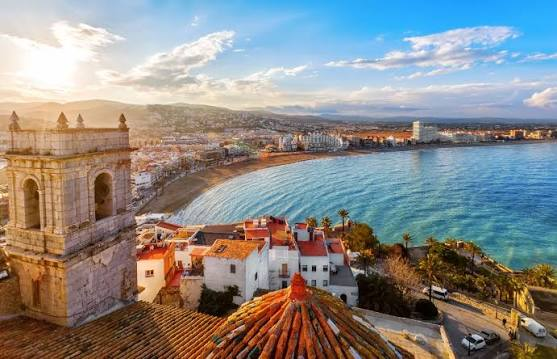

I enjoy travelling because it helps open my eyes to the way others live. Learning about new cultures and the histories of each place is very exciting. I am beyond grateful for each opportunity I recieve. I don't think I will every get tired of travelling since there is always new things to see and do.
Jump to my Top 5 Dream Destinations


| City | Country | Best Season to Visit | Famous For |
|---|---|---|---|
| Amsterdam | Netherlands | Spring | Tulips and art museums |
| Barcelona | Spain | Late spring, early summer | Architecture, beaches |
| Hanoi | Vietnam | Spring and fall | Cuisine, vibrant street life |
Amsterdam Touring Option: Affordable bus tours
More information on traveling to a new country: Visit Green Heart Travel